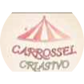

JOMI
VO
PT 🇵🇹
EN 🇬🇧
🇵🇹 Guia local
✓ Escolhas pessoais
🚗 Transporte privado
O que te apetece fazer?
Escolhe uma categoria e começa a explorar.
↓
PARCEIROS LOCAIS
A Casa do Pudim

Carrossel Criativo
← Voltar
← Voltar
WhatsApp ↗
Instagram ↗
Facebook ↗